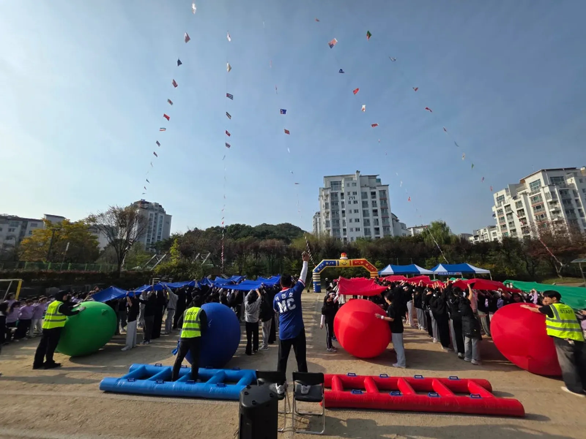

행사 준비 · 2026년 11월 13일
행사 게임도구 재배치: 회차 사이 회수·분류·출발 확인
행사 게임도구 재배치는 사용한 물건을 치우는 일과 다음 경기를 시작할 수 있게 만드는 일을 구분하는 데서 시작합니다. 회수할 도구, 남길 도구, 다음에 놓을 도구를 종목별로 나누고 준비 완료를 누가 확인할지 정해야 참가자 이동과 도구 이동을 섞지 않을 수 있습니다.

- 회수 완료와 다음 회차 준비 완료는 따로 표시합니다.
- 사용하지 않을 도구는 다음 경기 구역에서 분리합니다.
- 도구 상태와 참가자 위치를 확인한 뒤 출발 신호를 전달합니다.

1. 행사 게임도구 재배치는 종목 사이를 설계합니다
종목 이름만 적힌 순서표로는 끝난 뒤 어떤 물건을 남길지 알기 어렵습니다. 같은 공을 다음 순서에도 쓰더라도 놓는 위치와 필요한 개수는 다를 수 있으므로 구성을 다시 확인합니다.
회수와 재배치를 다른 작업으로 적습니다. 회수 담당이 물건을 모았다는 말만 듣고 진행자가 다음 참가자를 바로 출발시키지 않도록 합니다.
다음 종목의 준비 상태를 확인할 담당은 주최 측과 진행팀이 협의합니다. 도구 공급, 배치, 작동 판단을 모두 같은 사람이 맡는다고 가정하지 않습니다.
2. 도구 목록을 다음 행동 기준으로 나눕니다
물품명 옆에 끝난 뒤의 행동을 표시합니다. 그대로 유지, 정해진 위치로 이동, 사용 중지 후 확인처럼 다음 작업이 드러나야 회차를 바꿀 때 묻는 질문이 줄어듭니다.
도구 수량은 실제 준비한 실물과 맞춰 기록합니다. 사진이나 다른 행사 목록을 보고 같은 개수가 필요하다고 채우지 않습니다.
| 상태 | 담당자가 확인할 것 | 다음 단계 |
|---|---|---|
| 사용 중 | 현재 경기에서 쓰는 도구 | 경기 종료 확인 뒤 회수 |
| 회수 중 | 참가자와 도구 이동 경로 | 지정 분류 위치로 이동 |
| 확인 대기 | 누락·손상 의심 또는 용도 불명 | 해당 공급·운영 담당 확인 |
| 준비 완료 | 배치·수량·사용 조건 확인 | 출발 확인 담당에게 전달 |
분류 위치에는 다음 종목 도구와 확인이 필요한 도구를 섞어 놓지 않습니다. 급하다는 이유로 미확인 물품을 준비 완료 구역으로 옮기지 않습니다.

3. 참가자 이동과 물건 이동의 순서를 맞춥니다
경기가 끝나도 참가자가 도구 주변에 머무를 수 있습니다. 이동 안내를 한 뒤 실제로 작업 공간이 확보됐는지 확인하고 담당이 정한 순서로 회수를 시작합니다.
다음 참가자를 먼저 도구 사이에 세우지 않습니다. 대기 위치와 준비 구역을 구분하되 실제 사용 가능한 자리는 장소 및 운영 담당이 확인합니다.
도구를 옮기다가 통로가 막히면 임의로 객석이나 출입구 앞에 쌓지 않습니다. 잠시 멈추고 작업 담당과 배치 위치를 다시 맞추며 진행자에게 준비 대기 상태를 전달합니다.
무게가 있거나 설치 작업이 필요한 장비는 해당 담당의 절차를 따릅니다. 이 표는 제조사 사용 설명이나 전문 설치 점검을 대체하는 기술 지침이 아닙니다.
4. 상태가 다른 도구는 섞어서 다시 쓰지 않습니다
도구를 모으는 중 수량이 맞지 않거나 상태가 달라 보이면 발견 위치와 확인할 항목을 남깁니다. 누가 잃어버렸는지부터 따지거나 참가자에게 즉시 책임을 돌리지 않습니다.
사용 여부는 해당 도구를 판단할 담당에게 확인합니다. 겉으로 괜찮아 보인다는 이유로 고치거나 임의로 부속을 바꿔 사용하지 않습니다.
대체 물품을 쓰기로 했다면 규칙과 배치가 달라지는지도 진행팀과 확인합니다. 물건만 바꿨다고 다음 경기가 원래 설명과 같다고 가정하지 않습니다.

사진은 배치된 게임도구와 출발선 장면을 참고하기 위한 자료입니다. 사진 속 도구의 점검 결과나 실제 회수·재사용 절차를 확인한 사례는 아닙니다.
5. 출발 확인은 준비된 항목을 말로 맞춥니다
준비됐다는 짧은 말에 어떤 확인이 포함됐는지 합의합니다. 도구 배치, 참가자 위치, 작업 담당의 퇴장 여부를 확인한 뒤 출발 신호 담당에게 전달하는 방식으로 정할 수 있습니다.
출발 신호는 확인 창구를 하나로 모읍니다. 여러 담당의 손짓을 진행자가 서로 다른 신호로 해석하지 않도록 준비 중과 출발 가능의 뜻을 구분합니다.
일부 준비가 안 됐다면 남은 작업을 말합니다. 음악이나 멘트로 시간을 채우는 동안 완료됐다고 추정하지 말고 실제 확인이 돌아온 뒤 다음 순서로 넘깁니다.
회차를 거듭하면서 도구 위치를 바꾼 경우에는 다음 교대 담당에게 변경 위치를 알려 줍니다. 처음 배치 그림만 보고 도구를 찾지 않도록 현장 운영본을 맞춥니다.
6. 상담에는 종목 전환 작업을 따로 적습니다
힐링엔터테인먼트는 기업 체육대회 · 워크숍 · 팀빌딩, 참여형 게임 · 대동놀이, 전문 MC 진행을 안내합니다. 도구 회수 인력과 종목별 재배치 업무가 포함되는지는 행사 조건별로 확인합니다.
견적 문의에 종목 순서와 주최 측 보유 도구, 확인이 필요한 전환 작업을 적습니다. 자동 견적서의 항목 선택만으로 모든 현장 인력이 배정된다고 해석하지 않습니다.
차량에서 내리고 다시 싣는 작업은 장비 반입반출 확인에서 별도로 다룹니다. 이 글은 행사 진행 중 회차 사이에 만드는 준비 상태표이며 점수표나 장비 인수증이 아닙니다.
자주 묻는 질문
앞 종목이 끝나면 바로 다음 팀을 불러도 되나요?
회수 완료와 재배치 완료가 모두 확인됐는지 봅니다. 참가자가 기다릴 위치도 확인한 뒤 출발 안내와 구분해 호명합니다.
도구가 하나 부족하면 비슷한 물건으로 바꿔도 되나요?
임의로 대체하지 않고 도구 판단 담당과 진행팀에 확인합니다. 대체로 규칙이나 배치가 달라진다면 참가자 설명도 다시 맞춥니다.
사진만 보고 준비 완료를 판단할 수 있나요?
사진은 배치 참고 자료일 뿐입니다. 실제 수량, 상태, 사용 조건과 작업 공간은 현장에서 해당 담당이 확인해야 합니다.
행사 날짜가 정해지셨나요?
날짜 · 지역 · 인원 · 행사 종류만 알려 주시면 행사에 맞춰 상담 · 견적을 안내드립니다. 행사 중엔 통화가 어려우니 문자 · 카톡을 남겨 주세요.